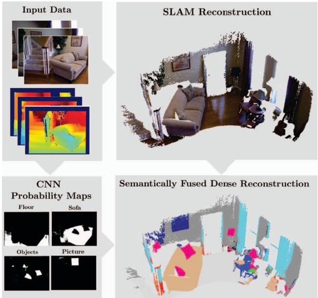

本节目标
读完你应能：① 说清 SemanticFusion 为什么是「稠密语义建图」的开端；② 讲出 surfel 地图是怎么「挂」上语义概率分布的；③ 复述递归贝叶斯融合公式及其人话含义；④ 指出 surfel 表示的天花板（没有自由空间），为后面的体素路线（0161–0162）埋好伏笔。
和前面课程怎么接
0158 已经借用过 SemanticFusion 的「语义通道」给动态检测当可动先验——那只是它的副产物，本节课把它当「语义建图本身」完整展开。0054–0056（CNN-SLAM / CodeSLAM / DeepFactors）是同一时期「用 CNN 出深度」的学习式 SLAM 上一代，可对照看「语义」与「深度」两条 CNN 用途。0114 把语义当感知零件、0147 的 SAM / DINOv2 是现代版语义零件——SemanticFusion 是这条脉络最早的、最朴素的版本。
1. 这一节要解决什么疑惑
前面七季里，地图几乎都是「几何」：点、面、体素、轨迹。它知道「墙在哪、桌子多高」，却不知道「那是墙、那是桌子」。生活里这就很别扭——你闭上眼让机器人给你递个杯子，它知道杯子在空间里的坐标，却说不出「那是个杯子」。语义建图块要补的就是这件事：给地图里的每个点贴上「这是什么」的标签。
SemanticFusion（2017，RSS）做的事很朴素也很关键：一边跑 SLAM（用的还是 ElasticFusion 那套 surfel 地图），一边用 CNN 给每一帧图像做逐像素语义分割，再把多帧的语义「揉」到同一个三维地图上。它第一次做到了稠密（dense）、在线、带语义标签的三维重建，是整个语义建图块公认的起点。
怎么看这张图：① 区别不在几何精度，而在「是否知道物体类别」；② 这正是语义建图块要补的能力；③ 后面的课会看到，光「认出类别」还不够，还要认出「这是第几个」。
要记住的一句话：语义建图 = 在几何地图的每个点 / 区域上，额外挂一个「这是什么」的标签。
2. surfel 地图长什么样
SemanticFusion 直接站在 ElasticFusion 的肩膀上。ElasticFusion 的地图表示叫 surfel（surface element，面元）——你可以把它想成「把物体表面贴满密密麻麻的小圆片」，每个圆片记着自己那一小块的颜色、法向、位置。它不是体素，不存物体内部，只存表面。
关键来了：SemanticFusion 在每个 surfel 上额外挂一个「各类别的离散概率分布」。也就是说，一个 surfel 不再是「纯灰」，而是「80% 像桌子、15% 像椅子、5% 像别的」。这就是它「存语义」的方式——用概率分布，而不是一个死标签。
怎么看这张图：① surfel 是「表面采样」，不是体素，所以天然不存物体内部；② 语义不是贴在整张沙发上的一句话，而是「分摊」到每个 surfel 的小概率；③ 这正是 SemanticFusion「挂语义」的物理位置。
要记住的一句话：surfel 上挂的不是单个标签，而是「各类别的概率分布」，靠多帧融合来变准。
3. 语义从哪来：一张反卷积 CNN
每个 surfel 的「语义概率」不是凭空来的，而是来自一个逐像素语义分割网络。SemanticFusion 用的是 Noh 等人的反卷积网络（VGG16 主干）：输入一张 RGB 图（或 RGB-D，多一个深度通道），输出一张和原图一样大的「各类别热力图」——每个像素都有一组「像墙 / 像地 / 像桌子…」的概率。
训练套路是：先在 PASCAL VOC 2012 上预训练，再在 NYUv2 的 13 个室内类别上微调。注意它做的是逐像素语义——只告诉你是「椅子」这个类，不告诉你是「第几把椅子」（那是后面的实例级，见 0160）。而且它逐帧独立预测，帧与帧之间的语义一致性，是靠 SLAM 把标签「贴」回地图来维系的。

怎么看这张图：这是一个「编码–反卷积」结构：左边下采样提取特征，右边上采样把特征「摊」回逐像素的类别热力图。注意原文特别说明 RGBD 实验输入其实是 4 通道——多出来的那一路就是深度。本课要你记住：这个网络只负责「给每张图出语义概率」，真正的「多帧融合」是下一步的事。
4. 核心操作：递归贝叶斯融合
现在到了全文最关键的式子。SLAM 已经把每个 surfel 的几何位置定好了，CNN 又不断给每个像素出新标签。问题变成：怎么把不断到来的「这一帧的标签看法」和「地图里已有的看法」合并？ SemanticFusion 用的是递归贝叶斯更新——每来一帧，就拿新证据去「修正」旧概率。
这句话在说什么：「surfel 上标签 = 第 i 类」这件事的置信度，等于「上一帧为止的置信度」乘以「这一帧 CNN 说它是第 i 类的似然」，再除以一个归一化常数 Z。用人话说就是——旧看法 × 新证据 = 更新后的看法。看的次数越多、看法越一致，最终概率就越集中、越准。这就是「递归」二字的含义：永远拿当前结果去接下一帧，不必回放历史。
怎么看这张图：① 这正是递归贝叶斯更新的效果——每帧都用新证据把概率往「更准」推；② 收敛的意义是「多看几眼就认准了」，单帧不准没关系；③ 它解释了为什么 SemanticFusion 单帧 class-avg 只有 39.4%，融合后却到 48.6%。
要记住的一句话：语义不是「一帧定生死」，而是「多帧投票、越看越准」。
5. 完整流水线
把上面几步串起来，就是 SemanticFusion 的流水线：相机图像兵分两路，一路进 SLAM（ElasticFusion）建 surfel 几何地图，一路进 CNN 出逐像素类概率图；两者通过 SLAM 已有的「帧→地图」投影关联，把 2D 标签贴到 3D surfel 上，再用递归贝叶斯融合。CRF 是最后一步的空间平滑（修掉分割锯齿）。

怎么看这张图：左图是纯几何的 surfel 重建（密集点面地图），右图在同一个地图上叠加了逐像素语义标签（按图例着色）。本课要你盯两件事：一是它确实「稠密」地给每个点上了色；二是它只做逐像素语义，不区分「这是第几个杯子」——那是实例级，属 0160 之后。

怎么看这张图：这张总览图把「SLAM 地图」和「一组概率预测图」并列，再用贝叶斯更新融合成最终稠密语义地图。它和 0158 借用的「语义通道」是同一个东西——只是 0158 只取它当动态检测的可动先验，这里才是它的本职。
6. surfel 的天花板：没有自由空间
SemanticFusion 开了个好头，但它的地图表示 surfel 有个天生的短板，也正是后面体素路线要解决的：surfel 只存表面，不存物体内部，也不存「自由空间」。一个 surfel 地图能告诉你「墙表面在哪」，却说不清「墙后面是不是通的、房间之间怎么连」。这种「可达性 / 连通性」信息，对导航级任务（机器人能不能从 A 走到 B）是命根子。
怎么看这张图：① 表示的粒度决定了「能回答什么问题」；② surfel 擅长稠密几何+语义，却不擅长「可达性」；③ 这正是本块主线「surfel → 体素 → 场景图」的第一次跨越动机。
要记住的一句话：地图表示决定能力上限——surfel 的上限就是「认得表面」，要到导航级还得换体素 / 图。
7. 实时性代价与一处必须纠正的误读
稠密语义很贵。SemanticFusion 的一帧开销拆开是：SLAM 29.3 ms + CNN 51.2 ms + 贝叶斯融合 41.1 ms（每 10 帧算一次），CRF 后处理更是 20.3 秒 / 10 次迭代（CPU，离线）。它之所以还能「实时」（约 25.3 Hz 整体），靠的是每 10 帧才跑一次 CNN 这个降频技巧。换句话说，它是「用几何实时、用语义降频」换来的在线体验。
互动判断
下面关于 SemanticFusion 的实时性，哪种说法对？
另外要提一句 CRF 的误读（0158 已点过一次）：SemanticFusion 用 Krähenbühl & Koltun 的全连接 CRF 只做标签空间平滑（让邻域像素更像同一类），和回环检测毫无关系。某篇 2023 综述把它说成「enabling loop detection」，这是错的。写引用时请勿采信。
互动判断
SemanticFusion 的全连接 CRF 是用来做什么的？
读完你应该能回答
- 为什么说 SemanticFusion 是「稠密语义建图」的开端？它和前一季「用 CNN 出深度」的路线（0054–0056）本质区别在哪？
- surfel 地图是怎么「挂」上语义的？它存的是单个标签还是概率分布？
- 递归贝叶斯融合公式 $P(l_i \mid I_{1..k}) \propto P(l_i \mid I_{1..k-1}) P(O_u=l_i \mid I_k)$ 在算什么？用一句话翻译它。
- surfel 表示的天花板是什么？为什么它做不到「导航级」的可达性信息？
- SemanticFusion 靠什么把「稠密语义」做到接近实时？CRF 的真实用途和常见误读分别是什么？